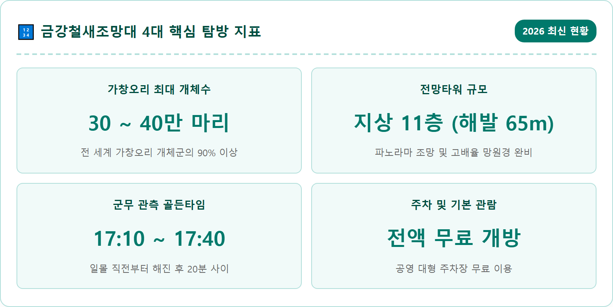
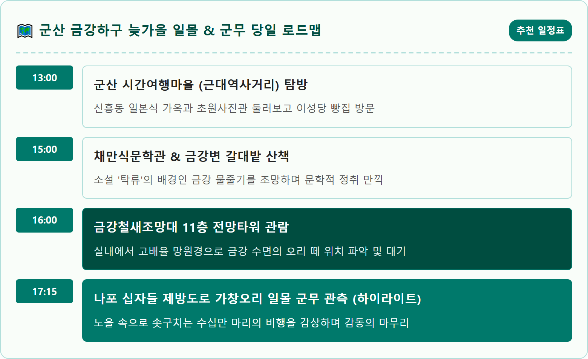
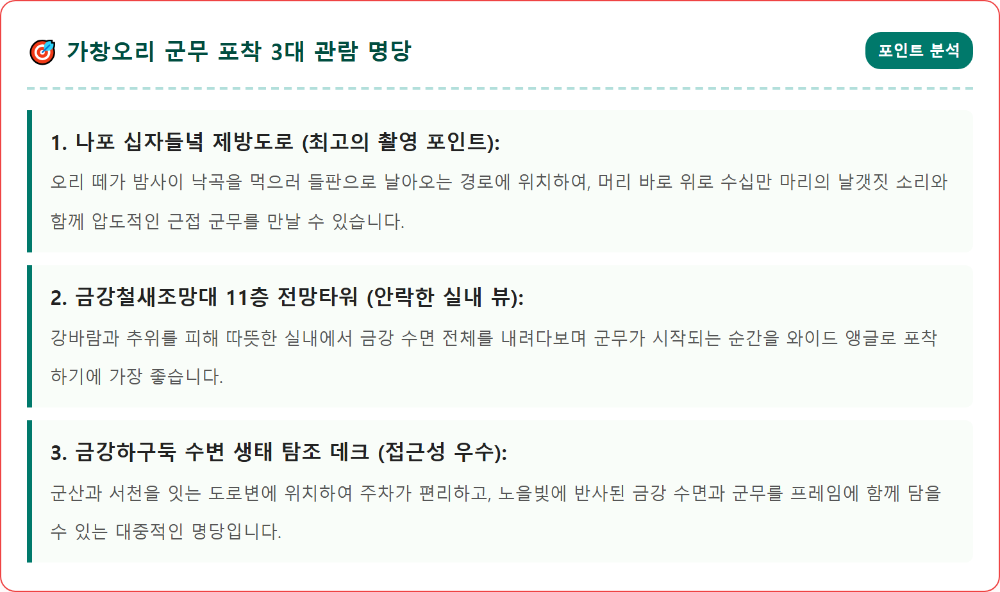
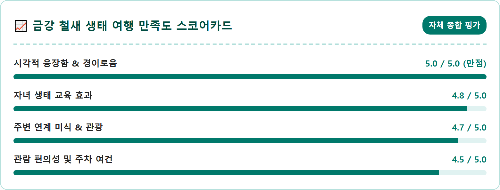
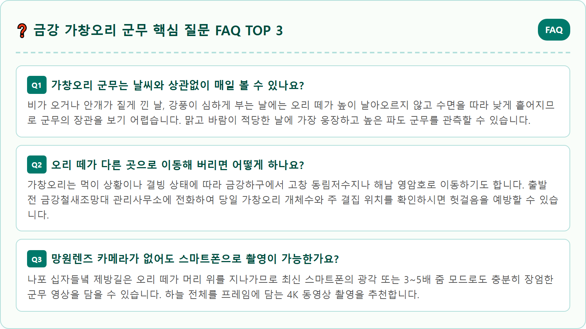

A cinematic and breathtaking wide-angle photograph of hundreds of thousands of Baikal teals performing an incredible synchronized murmuration (aerial flock dance) over the Geumgang River estuary in Gunsan, South Korea. The flock forms a massive undulating wave that swoops across a dramatic crimson and golden sunset sky. In the foreground, the modern 11-story Geumgang Migratory Bird Observatory tower rises beside the riverbank reed beds. The mirror-like surface of the river reflects the fiery dusk light. High dynamic range, 8k resolution, National Geographic style wildlife landscape, sharp focus on bird silhouettes against the glowing horizon, ultra realistic.

전북 군산시와 충남 서천군을 가르는 금강의 하구(Estuary)는 바다와 민물이 만나는 비옥한 기수역으로, 드넓은 갯벌과 무성한 갈대밭, 그리고 인근의 광활한 나포 십자들녘이 어우러진 천혜의 생태 보고입니다. 이곳은 가을이 깊어지는 11월이 되면 전 세계 어디에서도 찾아보기 힘든 경이로운 자연의 대서사시가 펼쳐지는 무대로 변모합니다.
그 주인공은 바로 몸길이 약 40cm 남짓한 소형 오리류인 '가창오리(Baikal Teal)'입니다. 얼굴에 녹색과 노란색의 독특한 태극 문양을 띠고 있어 '태극오리'라고도 불리는 이 새들은 시베리아 레나강 유역에서 번식을 마친 뒤 매년 10월 말부터 한반도 금강하구로 날아듭니다. 놀랍게도 전 세계 가창오리 개체수의 90% 이상이 이곳 금강하구와 인근 고창 동림저수지 등 서해안 일대에 집결하여 겨울을 납니다.
낮 동안에는 맹금류의 공격을 피하기 위해 강 한가운데 조밀하게 뭉쳐 평화롭게 잠을 자다가, 땅거미가 깔리는 일몰 직후가 되면 신비로운 군무를 시작합니다. 30만 마리가 넘는 거대한 무리가 단 1초의 오차도 없이 일사불란하게 방향을 틀며 하늘 위로 솟구쳤다 곤두박질치는 모습은 자연이 지휘하는 웅장한 교향곡을 시각화해 놓은 듯한 충격을 안겨줍니다.

군산시 성산면 철새로에 위치한 '금강철새조망대'는 금강하구의 생태계를 한눈에 조망할 수 있는 국내 최고의 탐조 전문 타워입니다. 지상 11층(해발 65m) 규모의 전망타워는 강변 절벽 위에 세워져 있어, 충남 서천의 신성리 갈대밭과 금강하구둑, 멀리 서해로 빠져나가는 금강 본류가 파노라마로 시원하게 펼쳐집니다.
11층 전망대에는 360도 전 방향을 조망할 수 있는 통유리창과 함께 초고배율 광학 망원경이 설치되어 있습니다. 바람이 매섭게 부는 늦가을에도 따뜻한 실내에서 모래톱에 앉아 깃털을 다듬는 저어새나 잠수를 즐기는 논병아리, 맹금류인 참수리의 날카로운 비행을 손에 잡힐 듯 선명하게 관찰할 수 있어 탐조 초보자나 어린이에게 최적의 환경을 제공합니다.
타워 하부에는 철새신체탐험관, 조류공원, 부화체험장 등 다양한 부대시설이 자리 잡고 있습니다. 특히 새의 몸속 구조를 거대한 모형으로 만들어 내부를 걸어 다니며 배울 수 있는 신체탐험관은 가족 단위 관람객에게 인기가 높습니다. 현재 조망대 시설은 공공 생태 복지 차원에서 상시 무료 또는 매우 저렴한 요금으로 개방되고 있어 부담 없이 방문할 수 있습니다.

가창오리 군무를 성공적으로 감상하기 위해서는 정확한 시간대와 계절적 타이밍을 숙지하는 것이 필수적입니다. 가창오리는 주행성(낮에 활동)이 아닌 야행성 조류이기 때문에 한낮에는 절대 대규모 군무를 펼치지 않습니다. 낮 동안에는 포식자의 위협이 적은 금강 한가운데 모래톱에 빽빽하게 모여 깃털을 고르며 잠을 청합니다.
군무가 시작되는 마법의 시간은 '일몰 후 10분~20분 사이'입니다. 11월 기준 군산 지역의 일몰 시각은 대략 오후 5시 15분에서 5시 25분 사이입니다. 해가 서산 너머로 완전히 넘어가고 하늘이 붉은빛에서 푸르스름한 어스름(매직아워)으로 변하는 바로 그 순간, 리더 오리의 신호와 함께 거대한 군무의 막이 오릅니다.
군무는 약 15분에서 25분 동안 숨 가쁘게 이어지다가, 무리가 어둠 속 나포들녘이나 서천들녘의 논바닥으로 흩어지며 끝이 납니다. 따라서 오후 4시 40분까지는 관람 포인트에 미리 도착해 삼각대와 카메라 세팅을 마치고 고요히 숨을 죽이며 기다리셔야 결정적 순간을 놓치지 않습니다.
전국의 야생동물 사진작가들과 조류 전문가들이 이구동성으로 꼽는 최고의 가창오리 군무 촬영지는 조망대에서 상류 쪽으로 약 7km 떨어진 '군산시 나포면 십자들녘 제방길'입니다. 간척 사업으로 조성된 바둑판 모양의 비옥한 논들이 금강변을 따라 넓게 펼쳐져 있는 곳입니다.
가창오리 무리가 낮 동안 머물던 강 수면에서 날아올라 먹이를 먹기 위해 들판으로 이동하는 길목이 바로 이 십자들녘 상공입니다. 제방길에 차를 대고 서 있으면, 수십만 마리의 오리 떼가 만들어낸 거대한 검은 구름이 관람객의 머리 위 30~50m 상공을 스치듯 지나가는 압도적인 전율을 맛볼 수 있습니다.
수십만 개의 날갯짓이 만들어내는 '쉬이익- 웅웅-' 하는 거대한 공기 마찰음은 마치 거대한 폭포수가 쏟아지는 듯한 웅장함을 선사합니다. 이때 붉게 타오르는 서쪽 하늘을 배경으로 실루엣을 포착하면 평생 간직할 걸작 사진을 완성할 수 있습니다. 단, 좁은 농로 제방길이므로 다른 차량의 통행에 방해가 되지 않도록 갓길 주차에 각별히 유의하셔야 합니다.

금강철새조망대는 전망타워 외에도 아이들의 눈높이에 맞춘 다채로운 야외 생태 시설이 알차게 갖추어져 있습니다. 타워 뒤편으로 이어지는 '조류공원'에는 다치거나 구조되어 야생으로 돌아가지 못하는 천연기념물 독수리와 수리부엉이, 왜가리, 원앙 등을 가까이서 관찰할 수 있는 동물원이 마련되어 있습니다.
또한 '부화체험관'에서는 유정란에서 병아리가 알을 깨고 나오는 실제 부화 과정을 날짜별 인큐베이터를 통해 실시간으로 관찰할 수 있어 생명의 신비로움을 생생하게 배울 수 있습니다. 식물원과 곤충생태관에서는 금강 유역에 자생하는 다양한 수생식물과 희귀 곤충 표본들을 함께 만나볼 수 있습니다.
야외 산책로에는 생태 연못과 물레방아, 철새 쉼터가 아기자기하게 꾸며져 있어 일몰 군무를 기다리는 오후 시간 동안 가족과 함께 한가롭게 산책을 즐기기에 더없이 훌륭합니다.
금강철새조망대 앞을 지나는 강변 도로는 국토종주 금강자전거길의 핵심 구간이자 환상적인 드라이브 코스입니다. 금강하구둑에서 시작하여 조망대를 거쳐 익산 웅포 곰개나루까지 이어지는 약 15km의 수변 도로는 신호등이 거의 없고 차량 통행이 한적하여 여유로운 늦가을 정취를 만끽할 수 있습니다.
도로 우측으로는 유유히 흐르는 은빛 금강 물줄기가 끝없이 동행하고, 좌측으로는 가을 억새와 갈대꽃이 흩날립니다. 자전거를 타고 강바람을 가르며 달리면 물가에서 먹이를 찾던 백로와 왜가리가 인기척에 놀라 푸드덕 날아오르는 평화로운 풍경을 마주하게 됩니다.
해질 무렵 자전거길 쉼터에 잠시 멈춰 서서 강물 위로 떨어지는 붉은 낙조를 바라보면, 바쁜 일상에서 쌓였던 번뇌가 강물과 함께 서해로 씻겨 내려가는 듯한 깊은 치유와 평온을 경험할 수 있습니다.
금강하구의 일몰 관람을 계획하신다면 방한 대책을 철저하게 세우셔야 합니다. 강과 바다가 만나는 하구 지형의 특성상 해가 지기 시작하면 서해에서 불어오는 습하고 매서운 강바람(칼바람)이 온몸을 파고들며 체감온도를 영하권으로 급격히 떨어뜨립니다.
두꺼운 롱패딩이나 방풍 기능이 있는 겉옷은 기본이며, 귀를 덮는 털모자(비니), 넥워머나 목도리, 방한 장갑을 반드시 착용해야 합니다. 주머니 속에 넣을 대용량 핫팩을 1~2개 챙기시면 야외에서 30분 이상 대기할 때 손가락이 곱는 것을 방지할 수 있습니다.
특히 카메라로 군무를 촬영하실 분들은 삼각대 운용에 주의하셔야 합니다. 강변의 돌풍으로 인해 삼각대가 흔들리거나 쓰러질 위험이 있으므로, 삼각대 중앙 고리에 무거운 가방을 걸어 무게중심을 낮추고 셔터스피드는 최소 1/500초 이상으로 확보해야 빠르게 날아가는 철새의 날갯짓을 선명하게 포착할 수 있습니다.

금강철새조망대의 운영 시간은 오전 9시부터 오후 5시까지이며(입장 마감 16:30), 매주 월요일은 정기 휴관일입니다. 야외 공원과 옥외 탐조 시설은 일몰 시간대까지 자유롭게 개방되므로 늦은 오후에 도착하셔도 야외 군무 관람에는 아무런 지장이 없습니다.
주차장은 조망대 정문 앞과 도로 건너편에 대형 버스와 승용차 수백 대를 수용할 수 있는 아스팔트 주차장이 마련되어 있으며 전액 무료로 이용하실 수 있습니다. 전기차 완속 충전기도 구비되어 있습니다.
다만 일몰 군무를 보기 위해 나포 십자들녘으로 이동하실 경우, 농로 제방길은 도로 폭이 협소하므로 반드시 교행이 가능한 갓길 공터에 차를 대셔야 합니다. 농기계의 통행을 방해하지 않는 성숙한 주차 매너를 지켜주시기 바랍니다.
철새들의 경이로운 군무를 감상한 후에는 군산 시내로 이동하여 군산만의 독특한 근대 문화유산과 정겨운 미식 투어로 여행을 풍성하게 채워보시기 바랍니다.
철새조망대에서 차로 5분 거리인 '채만식문학관'은 일제강점기 군산의 수탈과 민중의 애환을 풍자한 소설 '탁류'의 작가 백릉 채만식 선생을 기리는 곳입니다. 금강을 내려다보는 배 모양의 건축물 안에서 선생의 육필 원고와 문학 세계를 깊이 있게 음미할 수 있습니다.
시내로 들어서면 낡은 기찻길을 사이에 두고 아기자기한 레트로 상점들이 늘어선 '경암동 철길마을'이 기다립니다. 추억의 달고나 만들기, 쫀드기 굽기, 옛날 교복 입기 체험을 즐기며 학창 시절의 향수에 젖어볼 수 있습니다. 여행의 마지막은 70년 전통을 자랑하는 군산 명물 '중동호떡'이나 진한 국물의 짬뽕 한 그릇으로 따뜻하게 달래보시길 추천합니다.
| 구분 | 상세 정보 | 이용 팁 |
|---|---|---|
| 위치 | 전북특별자치도 군산시 성산면 철새로 120 (금강철새조망대) | 내비게이션: 금강철새조망대 검색 (대형 무료 주차장) |
| 운영 시간 | 09:00 ~ 17:00 (입장 마감 16:30 / 매주 월요일 휴관) | 야외 탐조 데크는 일몰 시간대까지 자유 개방 |
| 관람 요금 | 무료 개방 (공공 생태 테마파크) | 11층 전망타워 무료 관람 및 망원경 이용 가능 |
| 군무 관측지 | 나포 십자들녘 제방길, 금강하구둑 수변 데크 | 일몰 20분 전(17:00 전후) 현장 도착 대기 필수 |